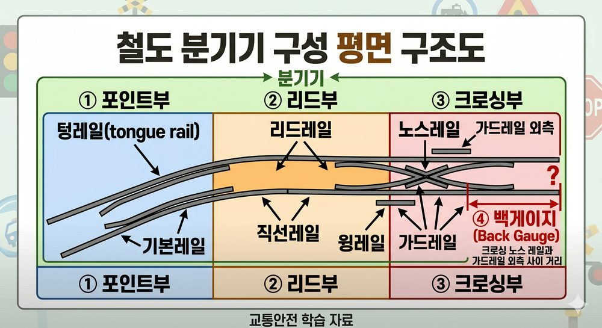

분기기(Turnout/Switch): 열차가 한 선로에서 다른 선로로 이동할 수 있게 해주는 궤도 구조물. 포인트(Point)·리드(Lead)·크로싱(Crossing) 3부분으로 구성.

| 종류 | 특징 | 적용 |
|---|---|---|
| 탄성분기기 | 텅레일과 리드레일을 일체화하여 힐 이음매(Heel Joint)가 없는 구조. 탄성 변형으로 텅레일이 굽혀지며 전환됨. 고속 주행 시 진동·소음 감소, 유지보수 간격 연장. | 고속선·주요 간선 분기기 |
| 탈선분기기 | 열차가 분기기에 진입할 때 의도적으로 탈선시켜 충돌을 방지하는 안전장치용 분기기. | 안전 측선, 보조 선로 |
| 다이아몬드크로싱(Diamond Crossing) | 두 선로가 X자형으로 교차하는 구조. 선로 간 이동 불가(단순 교차). 교차각에 따라 예각·직각 등. | 복잡 구내 선로 교차부 |
선로전환기(Point Machine): 분기기의 텅레일을 전환하여 열차의 진로를 바꾸는 장치. 전기식·수동식 등이 있으며 신호와 연동하여 작동.
| 구분 | 정의 | 위험 |
|---|---|---|
| 대향(對向) 포인트를 향해 진입 |
열차가 분기기의 포인트(텅레일)를 향해 진입. 텅레일이 열차 진행 방향을 결정. | 탈선 위험: 포인트가 반대 방향으로 열려 있으면 탈선 발생. 반드시 진로 정위 확인 필요. |
| 배향(背向) 크로싱부→포인트부 방향 |
열차가 크로싱부에서 포인트부 방향으로 진행. 포인트가 열차 뒤쪽에 위치하며 통과. | 할출(割出) 위험: 잠금되지 않은 포인트를 열차 차륜이 밀어 열면서 분기되는 현상. |
Q1 정답 ③
다이아몬드크로싱(Diamond Crossing): 두 선로가 X자형으로 교차. 단순 교차이므로 선로 간 이동 불가. 탄성분기기는 텅레일 탄성 방식, 탈선분기기는 안전 측선용.
Q2 정답 ②
대향(對向) 운전: 열차가 포인트(텅레일)를 향해 진입. 포인트가 반대 방향으로 열려 있으면 탈선 위험. 배향은 크로싱부에서 포인트부 방향으로 진행하며 할출 위험.
Q3 정답 ②
할출(割出): 배향 운전 시 잠금되지 않은 포인트를 열차 차륜의 플랜지가 밀어 열어버리는 현상. 분기기 잠금 장치(쇄정) 불량 시 발생. 대향 운전의 위험은 탈선.